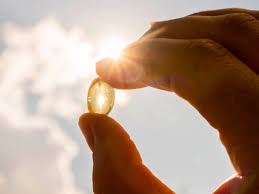

Altos niveles de vitamina D reduce el riesgo de contraer COVID-19

Hasta que llegue la vacuna contra el coronavirus, son varios los estudios que giran en torno a la enfermedad, su generación y posible prevención.Según un reciente estudio de la Universidad de Boston, las personas que poseen altos niveles de vitamina D tienen menos posibilidad de contrar covid-19.
Bajo el título 'Niveles bajos de 25-hidroxitamina D relacionados con el riesgo de covid-19', la Facultad de Medicina de la Universidad de Boston publicó una investigación bajo la siguiente pregunta: '¿Qué hace que una persona sea más propensa a contraer covid-19?'.
'La vitamina D afecta tanto al sistema inmunológico innato como al adaptativo y puede tener un papel en la protección contra las infecciones respiratorias', señaló el estudio realizado sobre más de 190.000 personas y dirigido por por Michael F.Holick, profesor de Medicina, Fisiología y Biofísica y Molecular Medicina en el campus médico de la Universidad de Boston.
Sobre algunos estudios anteriores menores, el infome indicó que 'han sugerido una relación entre la deficiencia de vitamina D y el riesgo de infecciones y mortalidad por covid-19, pero los estudios se basaron principalmente en tendencias geográficas en el estado de vitamina D y las tasas de infección por coronavirus en lugar de pacientes individuales'.
'Este nuevo estudio retrospectivo, que se publicó en PLOS ONE, mostró una fuerte correlación entre los niveles sanguíneos más altos de 25-hidroxivitamina D y las tasas más bajas de positividad para el SARS-CoV-2, especialmente en pacientes que vivían en códigos postales predominantemente afroamericanos e hispanos', detalla el informe.
Según se desprende del estudio realizado sobre más de 190.000 muestras de sangre de pacientes de todas las etnias y edades infectados con covid en los 50 estados, se observó que 'cuanto más alto era el nivel en sangre del paciente de 25-hidroxivitamina D, hasta 55 ng / ml, más bajo era su riesgo de infectarse con el coronavirus'.
'Las personas de color se han visto particularmente afectadas por covid-10', informó el Dr. Holick.Y agregó: 'Descubrimos que los pacientes que viven en códigos postales predominantemente afroamericanos e hispanos tenían más probabilidades de tener deficiencia de vitamina D y un mayor riesgo de contraer la infección'.
Por otra parte, también se descubrió que los pacientes que tenían deficiencia de vitamina D (nivel en sangre de 25-hidroxivitamina D menor de 20 ng / ml) tenían una tasa de positividad 54 por ciento más alta en comparación con aquellos que tenían suficiente vitamina D (nivel en sangre de 25-hidroxivitamina D de al menos 30 ng / mL).
Para alcanzar un nivel en sangre de 25 hidroxivitamina D de al menos 30 ng / ml, las Directrices de la Endocrine Society recomiendan que los bebés, los niños y los adultos reciban 400-1000 UI, 600-1000 UI y 1000-1500 UI de vitamina D al día, respectivamente.Los adultos obesos requieren 2-3 veces más.
'Esta intervención simple y económica de tomar vitamina D puede ayudar significativamente a reducir el riesgo de infección por este virus mortal', concluyó el Dr. Holick.
Se trata de un nutriente presente en ciertos alimentos que es necesario para la salud y para mantener los huesos fuertes.Para ello, ayuda al cuerpo a absorber el calcio de los alimentos y suplementos.Las personas que consumen vitamina D en cantidad muy escasa pueden tener huesos débiles, delgados y frágiles.
Por otro lado, los músculos requieren esta vitamina para el movimiento.Junto con el calcio, la vitamina D ayuda a proteger a los adultos mayores contra la osteoporosis.También se encuentra en las células de todo el cuerpo y la piel la produce al exponerse directamente a la luz solar.
Los siguientes alimentos son fuente de Vitamina D:
Posted On: 2021-01-22T00:00:00
Posted By: Infórmate Diario
Content Date: 2021-01-22
Download Date: 2021-04-08
Document ID: L0C049E49